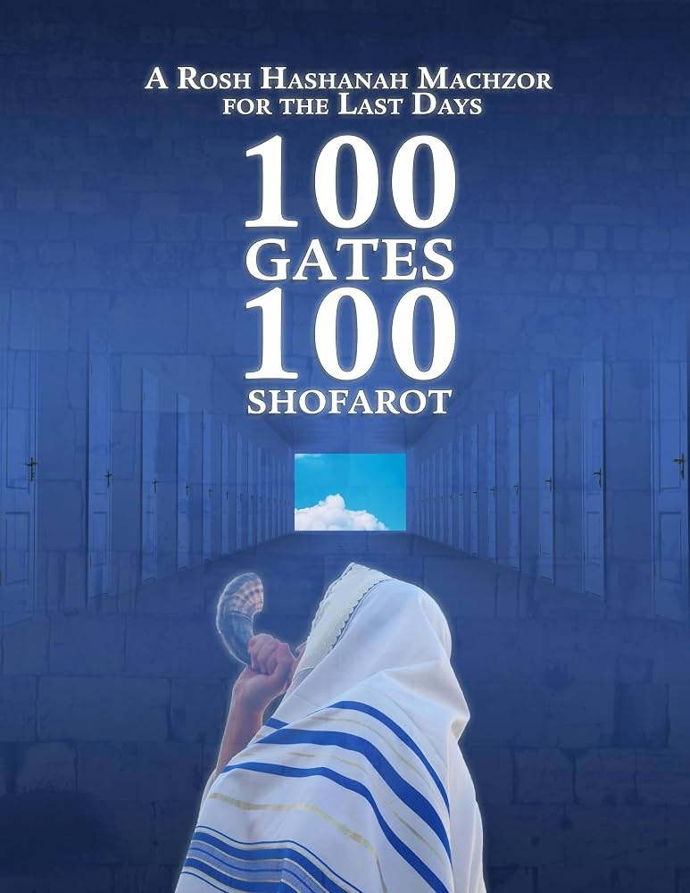

一百道门
一百个羊角
100 Gates
100 Shofarot
八堂课程，走过沙皮拉拉比为「末后的日子」编写的一部弥赛亚犹太《新年祈祷书》(Machzor)。从午夜的悔罪祷告 (Selichot)，到吹响羊角、为君王加冕、把罪投入深海 (Tashlich)，直到摩利亚山上「以撒被缚」的祭坛——每一道门，都在等候那「大角」吹响、余民被招聚的日子。 Eight lessons through the Messianic Jewish Rosh HaShanah Machzor that Rabbi Itzhak Shapira wrote “for the last days.” From the midnight prayers of Selichot, to the blast of the shofar, the crowning of the King, the casting of sin into the sea (Tashlich), all the way to the altar on Mount Moriah where Isaac was bound — every gate waits for the day the “great shofar” sounds and the remnant is gathered.
这份指南陪你走过沙皮拉拉比 (Rabbi Itzhak Shapira) 的《一百道门·一百个羊角》——一部与众不同的犹太新年祈祷书 (Machzor)。它不是一本论文，而是一本祷告书：为敬畏之日 (Days of Awe) 预备，逐日带你诵读悔罪的祷文、吹响羊角、寻见弥赛亚的面。书名「一百道门」(מאה שערים) 与「一百个羊角」(מאה שופרות) 取自新年清晨那一百声角鸣——每一声，都是一道门。沙皮拉拉比写道：这一年的新年别有意义，因为它的另一个名字是「合一之日」(יום האחדות)。愿这八堂课，使你听见那召唤万民重生的角声。 This guide walks you through Rabbi Itzhak Shapira's 100 Gates – 100 Shofarot — a Jewish New Year prayer book (a machzor) unlike any other. It is not a treatise but a book of prayer: prepared for the Days of Awe, it leads you day by day through the prayers of repentance, the sounding of the shofar, and the seeking of the Messiah's face. The title “100 Gates” (Me'ah She'arim) and “100 Shofarot” (Me'ah Shofarot) is drawn from the hundred blasts of the New Year morning — and each blast is a gate. Rabbi Shapira writes that this year's New Year carries a different meaning, because one of its names is the “Day of Unification” (Yom Ha'achdut). May these eight lessons help you hear the shofar that calls all peoples to be born again.
沙皮拉拉比 (Rabbi Itzhak Shapira) 是「Ahavat Ammi」事工的创办人，一位弥赛亚犹太拉比。他为基督的身体编写了这部《新年祈祷书》，与他在本站「一百道门·一百个羊角」系列直播里所教导的，正是同一份信息。他在引言里坦白心声： Rabbi Itzhak Shapira, founder of Ahavat Ammi Ministries, is a Messianic Jewish rabbi. He prepared this machzor for the body of Messiah; it carries the same message he teaches in the “100 Gates 100 Shofarot” livestream series featured on this site. In his introduction he opens his heart:
「我把这本书献给那从各邦、各族、各色重生而更新的新妇。愿你们真切地听见羊角的声音。我简单的祷告是：愿在这『一百道门、一百个羊角』之中，诸天为你们每一个人敞开，使你们进入耶利米书 31 章的新约，无论是个人，还是整个群体。」 “I dedicate this publication to the born-again, improved bride from every nation, tribe and color. May you indeed hear the voice of the shofar. My simple prayer is that during the 100 Gates–100 Shofarot, the heavens will open up to each and every one of you to enter into the new covenant of Jeremiah 31, individually and corporately.”
本指南共 八堂课，循着这部祈祷书的次序展开：从悔罪 (Selichot) 到吹角，从为君王加冕到 Tashlich，最后停在全书的心脏——那篇关于「以撒被缚」(Akedah) 的弥赛亚式注释。每一堂遵循同样的五部分节奏： The guide is structured as eight lessons, following the order of the machzor itself: from Selichot to the shofar, from crowning the King to Tashlich, ending at the heart of the whole book — its long Messianic commentary on the Binding of Isaac (the Akedah). Every lesson follows the same five-part rhythm:
① 这道门—— 这一「门」(שער) 在沙皮拉拉比的框架里开向何处；
② 经文与祷文—— 这道门所立的圣经或祷文根基；
③ 希伯来之眼—— 一个关键的希伯来词，是这道门的钥匙；
④ 弥赛亚的回响—— 这道门如何回响着耶书亚的声音；
⑤ 吹角默想—— 可以带进祷告里的问题。 ① At the Gate — where this “gate” (sha'ar) opens in Rabbi Shapira's frame;
② The Text — the Scripture or prayer on which the gate stands;
③ Through Hebrew Eyes — one Hebrew word that is the key to the gate;
④ A Yeshua Lens — how the gate echoes the voice of Yeshua;
⑤ The Shofar's Call — questions to carry into prayer.
一句提醒：这是一本犹太祈祷书，满了希伯来的祷文、传统与意第绪的虔敬。读它，不是要我们「照搬礼仪」，而是要我们站在以色列的祷告里，重新听见福音。书里的祷文（如「愿你催促你救恩的萌芽，速速带来你的弥赛亚耶书亚的到来」）已经把弥赛亚的盼望织进了每一页。愿这八堂课，使你更深地爱那位犹太的耶书亚，也更深地为以色列的救恩祷告。 A word of note: this is a Jewish prayer book, full of Hebrew liturgy, tradition, and Yiddish-rooted piety. We read it not to “copy a ritual,” but to stand inside Israel's prayers and hear the Gospel afresh. Its prayers (such as “may He hasten the coming of Yeshua His Messiah”) have already woven the messianic hope into every page. May these eight lessons make you love the Jewish Yeshua more deeply, and pray more deeply for the salvation of Israel.
合一之日——两根杖，一位君王 The Day of Unification — Two Sticks, One King
① 这道门 ① At the Gate
沙皮拉拉比一开篇就给新年起了一个出人意料的名字：「合一之日」(יום האחדות)。我们常谈犹太人与外邦人的合一、新与旧的合一、天与地的合一、妥拉与恩典的合一。但他说，吹角节 (Feast of Trumpets) 还指向另一种合一——以西结所预言的「两根杖」的合一。新年一年一次地提醒我们：弥赛亚的丰满尚未临到，我们还没有人活在耶利米书 31 章那新约的完全里。而羊角的吹响，正是召唤我们去「使天平倾向弥赛亚的丰满」。 Rabbi Shapira opens by giving the New Year a surprising name: the “Day of Unification” (Yom Ha'achdut). We often speak of the unity of Jew and Gentile, old and new, heaven and earth, Torah and grace. But, he says, the Feast of Trumpets points to yet another unification — the joining of the “two sticks” prophesied by Ezekiel. Rosh HaShanah comes once a year to remind us that the fullness of Messiah has not yet arrived; none of us yet live in the completeness of the new covenant of Jeremiah 31. And the blast of the shofar is the call to “tilt the scale toward the fullness of the Messiah.”
② 经文与祷文 ② The Text
「人子啊，你要取一根木杖，在其上写『为犹大和他的同伴以色列人』；又取一根木杖，在其上写『为约瑟，就是以法莲的杖，和他的同伴以色列全家』。你要使这两根木杖接连为一，在你手中成为一根。」 “And you, O mortal, take a stick and write on it, ‘Of Judah and the Israelites associated with him;’ and take another stick and write on it, ‘Of Joseph — the stick of Ephraim — and all the House of Israel associated with him.’ Bring them close to each other, so that they become one stick, joined together in your hand.” 《以西结书》37:16-17 · Ezekiel 37:16-17
③ 希伯来之眼 ③ Through Hebrew Eyes
אַחְדוּת · achdut——「合一、合而为一」。沙皮拉拉比指出，这两根杖代表两位弥赛亚的形象：「大卫之子弥赛亚」(Messiah Son of David)，代表正统的犹太教；与「约瑟之子弥赛亚」(Messiah Son of Joseph，即以法莲)，代表弥赛亚信徒。末后日子里我们所寻求的终极合一，就是这两者合而为一，好叫「耶和华必作全地的王；那日耶和华必为独一无二的，他的名也是独一无二的」(亚 14:9)。问题是：这合一如何成就？我们常谈合一、无故的爱、尊荣的文化，却不知如何抵达。 אַחְדוּת · achdut — “oneness, unification.” Rabbi Shapira reads the two sticks as two messianic figures: the Messiah Son of David, representing normative Judaism, and the Messiah Son of Joseph (Ephraim), representing Messianic believers. The ultimate unification we seek in the last days is the joining of these two, so that “the LORD will be one and His name will be one” (Zechariah 14:9). The question is: how is this oneness achieved? We speak so often of unity, baseless love, and a culture of honor — yet we do not know how to arrive.
④ 弥赛亚的回响 ④ A Yeshua Lens
讽刺的是，新年所诵读的耶利米书 31 章，恰好停在先知最后那句话之前。沙皮拉拉比提醒：那新约的应许是「我要赦免他们的罪孽，不再记念他们的罪恶」——这正是耶书亚在最后晚餐举杯时所宣告的「用我血所立的新约」(路 22:20)。两根杖在弥赛亚一只手中合一，叫人无法不想起那位「要将神四散的儿女都聚集归一」的弥赛亚 (约 11:52)，那位拆毁了「中间隔断的墙」、将两下造成一个新人的主 (弗 2:14-15)。新年的合一，不是靠我们的努力，而是靠那位把两根杖握在自己手里的君王。 Ironically, the Jeremiah 31 reading for Rosh HaShanah stops just short of the prophet's final words. Rabbi Shapira points out that the new-covenant promise is “I will forgive their iniquities, and remember their sins no more” — the very words Yeshua proclaimed over the cup at the Last Supper: “the new covenant in my blood” (Luke 22:20). The two sticks made one in the Messiah's single hand cannot help but recall the Messiah who would “gather into one the scattered children of God” (John 11:52), the One who tore down “the dividing wall” to make the two into one new humanity (Eph 2:14-15). The unification of the New Year is not won by our effort, but by the King who holds both sticks in His own hand.
⑤ 吹角默想 ⑤ The Shofar's Call
- 「合一之日」这个名字，如何改变我对新年（吹角节）的理解？我把它当成节庆，还是当成对合一的呼召？How does the name “Day of Unification” change my understanding of the New Year (Feast of Trumpets)? Do I treat it as a festival, or as a call to oneness?
- 两根杖在弥赛亚一只手中合一。在我所处的群体里，哪些「杖」仍然分裂？我能为怎样的合一祷告？The two sticks become one in the Messiah's single hand. In my own community, which “sticks” are still divided? What oneness can I pray toward?
- 新年的诵读「停在」赦罪的应许之前。我是否也活在新约「尚未完全」的张力里，仍在等候那丰满？The New Year reading “stops short” of the promise of forgiveness. Do I, too, live in the tension of a new covenant “not yet complete,” still awaiting its fullness?
羊角与重生——「再使一点力」 The Shofar and the New Birth — “Push a Little Harder”
① 这道门 ① At the Gate
为什么是羊角？沙皮拉拉比把整本书钉在这一个声音上。他说，羊角 (shofar) 的字根是 shafar（שפר），而它的吹响声，叫人想起分娩——那必须在生产时破裂的羊水。羊角的声音邀请我们每一个人「重生」，同时也提醒一位临盆的产妇所担的责任：「再使一点力」(push harder)，去完成那阵痛的最后一程。新年不是要我们停在悔恨里，而是要我们用力，把这世界推向弥赛亚的丰满。 Why the shofar? Rabbi Shapira pins the whole book to this one sound. The shofar, he notes, is rooted in the word shafar (שפר), and its blast recalls birth — the amniotic waters that must break in the process of labor. The sound of the shofar invites each of us to be “born again,” while also reminding a woman in labor of her responsibility to “push harder” to complete the final phase of the birth-pangs. The New Year does not leave us in regret; it calls us to push — to press this world toward the fullness of the Messiah.
② 经文与祷文 ② The Text
「妇人生产的时候就忧愁，因为她的时候到了；既生了孩子，就不再记念那苦楚，因为欢喜世上生了一个人。」……「那时,人子的兆头要显在天上……他要差遣使者,用号筒的大声,将他的选民,从四方……都招聚了来。」 “A woman giving birth to a child has pain... but when her baby is born she forgets the anguish because of her joy that a child is born into the world.” … “And He will send His angels with a great sound of a trumpet [shofar], and they will gather together His elect from the four winds.” 《约翰福音》16:21；《马太福音》24:31 · John 16:21; Matthew 24:31
③ 希伯来之眼 ③ Through Hebrew Eyes
שִׁיפּוּר · shipur——「改善、进步」，与 shofar 同根。沙皮拉拉比说，「Ahavat Ammi」事工出版这本书有两个与羊角相关的目标：让许多人「重生」(שפיר, shafir)，并在我们看待神、弥赛亚、彼此、以及犹太人的方式上「有所改善」(שיפור, shipur)——「再多爱一点，再使一点力」，让我们的祷告、我们的关系、我们与宇宙之主的关系，都有那「微小的长进」。一个声音里，藏着「重生」与「成圣」两件事。 שִׁיפּוּר · shipur — “improvement, progress,” from the same root as shofar. Rabbi Shapira says Ahavat Ammi released this book with two shofar-shaped goals: to see many “born again” (shafir), and to see an “improvement” (shipur) in the way we view God, the Messiah, one another, and ultimately the Jewish people — “to love a little more, to push a little harder,” so that our prayer lives, our relationships, and our walk with the Master of the Universe gain that “slight improvement.” In one sound, two things hide: the new birth, and the slow growth into holiness.
④ 弥赛亚的回响 ④ A Yeshua Lens
耶书亚自己用了同一幅图画：「你们必要重生」(约 3:7)，又说门徒的忧愁要像产难，「既生了孩子，就不再记念那苦楚」(约 16:21)。而书中一段拉比传统更是惊人：那只代以撒被献的公羊，有两只角——「左角在西奈山被吹响（赐下妥拉时），右角将在弥赛亚来临时吹响」；右角比左角大，所以论到弥赛亚的日子，经上说「当那日，必大发角声」(赛 27:13；参《妥拉之女》Tzenah Urenah)。羊角的声音，从西奈一直响到弥赛亚——而那最后、最大的一声，正是耶书亚用号筒的大声招聚选民的声音 (太 24:31)。 Yeshua used the same picture: “You must be born again” (John 3:7), and likened the disciples' grief to childbirth — “when her baby is born she forgets the anguish” (John 16:21). And a rabbinic tradition in the book is startling: the ram offered in Isaac's place had two horns — “the left horn was blown at Mount Sinai [when the Torah was given]; its right horn will be blown to herald the coming of Mashiach.” The right horn was the larger, and so of the days of Messiah it is written, “on that day, a great shofar will be blown” (Isaiah 27:13; cf. the Tzenah Urenah). The sound of the shofar runs from Sinai all the way to Messiah — and that last, greatest blast is the very sound by which Yeshua gathers His elect (Matt 24:31).
⑤ 吹角默想 ⑤ The Shofar's Call
- 羊角召我「重生」，也召我「再使一点力」。今天，神在哪一个阵痛里，要我不放弃地「再用一点力」？The shofar calls me to be “born again,” and also to “push a little harder.” In which labor-pang today is God asking me not to give up, but to push?
- 「改善」(shipur) 与「重生」(shafir) 同根。我是否把重生当成终点，却忽略了那「微小长进」的呼召？“Improvement” (shipur) shares a root with “born again” (shafir). Have I treated the new birth as a finish line, and missed the call to that “slight improvement”?
- 公羊的右角要为弥赛亚吹响。当我听见羊角，我是否真的在等候那「大角声」、那位招聚选民的主？The ram's right horn is to sound for Messiah. When I hear the shofar, am I truly awaiting that “great shofar,” the One who gathers His elect?
悔罪的祷告——使全以色列的心回转 Selichot — Turning the Heart of All Israel
① 这道门 ① At the Gate
在新年之前的那些日子，犹太人诵读「悔罪祷文」(Selichot, סליחות)——这是犹太教里独一无二的礼仪。本书的伯恩斯坦拉比 (Rabbi Steven Bernstein) 解释：塞法迪犹太人整个以禄月 (Elul) 每天诵读，阿什肯纳兹犹太人则从新年前那个安息日之后的午夜开始。这场祷告里没有「示玛」、没有「巴尔胡」、没有「阿米达」——它是一个让全以色列聚到一处、把心一同转向悔改 (teshuvah) 的机会。沙皮拉拉比特别为「末后的日子」译编了这些祷文，作为逐日的灵修，引你寻见弥赛亚的面。 In the days before the New Year, Jews recite the “prayers of forgiveness,” Selichot (סליחות) — a liturgy unique in Judaism. The book's Rabbi Steven Bernstein explains: Sephardic Jews recite them every day of the month of Elul; Ashkenazic Jews begin at midnight after the Shabbat before Rosh HaShanah. These prayers contain no Shema, no Barchu, no Amidah — they are an opportunity for all Israel to gather and turn its heart together toward teshuvah (repentance). Rabbi Shapira translated and arranged them “for the last days,” as a daily devotional to lead you to seek the Messiah's face.
② 经文与祷文 ② The Text
「耶和华，耶和华，是有怜悯有恩典的神，不轻易发怒，并有丰盛的慈爱和诚实，为千万人存留慈爱，赦免罪孽、过犯和罪恶……」 “Adonai, Adonai, a God compassionate and gracious, slow to anger, abounding in kindness and faithfulness, extending kindness to the thousandth generation, forgiving iniquity, transgression, and sin…” 《出埃及记》34:6-7 · 神的十三属性 / The Thirteen Attributes
③ 希伯来之眼 ③ Through Hebrew Eyes
תְּשׁוּבָה · teshuvah——「回转、归回」，而不只是「忏悔」。悔罪礼的核心，是七次诵念神的「十三属性」(出 34:6-7)，与三次诵念集体认罪的「Ashamnu」。伯恩斯坦拉比指出：这十次诵念，对应着「十句话」(Dibraya, 即十诫) 与十灾，叫我们的心在合一中认出神的可畏。Teshuvah 不是情绪上的懊悔，而是整个人「转身回家」——从背向神，转为面向神。 תְּשׁוּבָה · teshuvah — “return, turning back,” not merely “repentance.” At the heart of Selichot is the sevenfold recitation of God's “Thirteen Attributes” (Exod 34:6-7) and the threefold recitation of the communal confession Ashamnu. Rabbi Bernstein notes that these ten recitations correspond to the “Ten Words” (the Dibraya, the Ten Commandments) and the ten plagues, bringing our hearts in unity to recognize the awesomeness of God. Teshuvah is not emotional remorse but a whole person “turning around to come home” — from facing away from God to facing Him.
④ 弥赛亚的回响 ④ A Yeshua Lens
伯恩斯坦拉比直面一个问题：「我若是相信耶书亚的弥赛亚犹太人，为什么还要参与这认罪？」他答道：认罪本是我们救恩不可或缺的一部分——「我们若认自己的罪，神是信实的，是公义的，必要赦免我们的罪」(约一 1:9)。而更深的一层是：悔罪礼不只认自己的罪，更是替全以色列认罪。无论是生而为以色列，还是被接枝进以色列，我们都深深彼此相连。耶书亚自己——那位无罪的——尚且站在约旦河里，与悔改的以色列认同；我们这些属他的人，岂不更当在这「集体认罪」里，与他的百姓一同低头？ Rabbi Bernstein meets a question head-on: “If I am a Messianic Jew, a believer in Yeshua, why should I take part in this confession?” His answer: confession is integral to our salvation — “If we confess our sins, He who is faithful and just will forgive us our sins and purify us” (1 John 1:9). And deeper still: Selichot confesses not only our own sin, but the sins of all Israel. Whether born of Israel or grafted into Israel, we are deeply bound to one another. Yeshua Himself — the sinless One — stood in the Jordan to identify with a repenting Israel; how much more should those who are His bow, in this communal confession, with His people?
⑤ 吹角默想 ⑤ The Shofar's Call
- 我的悔改，多半停在「自己的罪」。我是否曾替我的群体、我的民族认罪、代求？My repentance usually stops at “my own sin.” Have I ever confessed and interceded for the sins of my community, my people?
- Teshuvah 是「转身回家」，不只是懊悔。今天，神在哪一件事上，邀我整个人「转过身来」面向他？Teshuvah is “turning back home,” not just remorse. In what one thing today is God inviting my whole self to “turn around” and face Him?
- 神的「十三属性」被诵念七次。若我真信他「有怜悯、有恩典、不轻易发怒」，我会怎样不同地来到他面前？God's Thirteen Attributes are recited seven times. If I truly believed Him “compassionate, gracious, slow to anger,” how differently would I come to Him?
为君王加冕——新年的王权 Crowning the King — The Kingship of the New Year
① 这道门 ① At the Gate
悔罪之后，祈祷书带我们进入新年当日的「次序」(Seder)、白昼的祷告与「附加祷文」(Mussaf)。这一日最深的主题，是君王登基。新年被称为「天地受造之日」，也是宣告「耶和华作王」的日子。我们在「Malchuyot」（王权）的祷文里，把神高举为王，承认他对全地的主权。这不是抽象的神学，而是一场加冕：我们俯伏、屈膝、把冠冕戴在唯一配得的那一位头上。 After repentance, the machzor leads us into the New Year's “order” (the Seder), the daytime prayers, and the “additional service” (Mussaf). The deepest theme of the day is the enthronement of the King. The New Year is called the day the world was created, and the day we proclaim “the LORD reigns.” In the Malchuyot (Kingship) prayers we exalt God as King and acknowledge His sovereignty over all the earth. This is no abstraction but a coronation: we bow, we bend the knee, we set the crown on the only One worthy of it.
② 经文与祷文 ② The Text
「我们的本分是称颂万有的主……所以我们仰望你，耶和华我们的神，愿万民都呼求你的名……愿他们都接受你国度的轭，愿你作王治理他们，直到永远。因为国度是你的……」 “It is our duty to praise the Master of everything… Therefore we put our hope in You, Adonai our God… all the world's inhabitants will recognize and know that to You every knee shall bow… and they will all accept the yoke of Your Kingdom, that You may reign over them soon and for all eternity. For the Kingdom is Yours…” 「阿莱努」祷文 · The Aleinu prayer
③ 希伯来之眼 ③ Through Hebrew Eyes
מַלְכֻיּוֹת · Malchuyot——「王权（祷文）」，源自 melech（王）。沙皮拉拉比指出一个美丽的细节：古时君王是在河边受膏加冕的，所以新年也在河边举行 Tashlich，宣告「耶和华是我们至高的主」。整个新年，从「阿莱努」到「附加祷文」，都是一场王权的宣告：不是「我作我自己的王」，而是「他作万有的王」。 מַלְכֻיּוֹת · Malchuyot — the “Kingship” prayers, from melech (king). Rabbi Shapira notes a beautiful detail: kings of old were anointed and crowned beside a river, which is why the New Year's Tashlich is also held by the water, proclaiming “Adonai is our sovereign Lord.” The entire New Year, from the Aleinu to the Mussaf, is a declaration of kingship: not “I reign over myself,” but “He reigns over all.”
④ 弥赛亚的回响 ④ A Yeshua Lens
最动人的是：这部祈祷书里，连古老的「附加祷文」与「哀悼者的卡迪什」(Kaddish) 都已被改写，向着弥赛亚敞开。卡迪什祷文求神「使他的救恩萌芽，速速带来他的弥赛亚耶书亚的到来」。于是，这场为君王加冕的礼仪，便不再是遥望一位无名的王——而是宣告那位已经来过、还要再来的王。当万膝向他跪拜的那日，正是腓立比书所唱的：「叫一切在天上的、地上的，因耶书亚的名无不屈膝……无不口称耶书亚基督为主」(腓 2:10-11)。新年的加冕，预演着那终极的加冕。 Most moving of all: in this machzor even the ancient Mussaf and the Mourner's Kaddish have been rewritten to open toward the Messiah. The Kaddish asks God to “let His redemption sprout, and may He hasten the coming of Yeshua His Messiah.” And so this coronation liturgy is no longer the hope of a nameless king — it is the proclamation of the King who has come and will come again. The day every knee bows to Him is the very day Philippians sings: “that at the name of Yeshua every knee should bow, in heaven and on earth… and every tongue confess that Yeshua the Messiah is Lord” (Phil 2:10-11). The New Year's coronation rehearses the final one.
⑤ 吹角默想 ⑤ The Shofar's Call
- 新年是一场「加冕」。在我心里，今天究竟谁坐在宝座上——是我，还是那位配得冠冕的王？The New Year is a coronation. In my heart today, who truly sits on the throne — I, or the King worthy of the crown?
- 古时君王在河边受膏。我有没有一个「河边」的地方与时刻，定意把主权交还给神？Kings were anointed by the river. Do I have a “riverside” place and moment where I deliberately hand sovereignty back to God?
- 卡迪什求神「速速带来弥赛亚耶书亚」。我的祷告里,有多少是真切地催促、等候他的国降临？The Kaddish asks God to “hasten Yeshua the Messiah.” How much of my prayer truly longs for, and hastens, the coming of His Kingdom?
Tashlich——将罪投入深海 Tashlich — Casting Sin into the Depths
① 这道门 ① At the Gate
新年的第一天（或第二天），犹太人走到一处流动的活水边，举行「Tashlich」(תשליך)——象征性地把罪「投入海的深处」。伯恩斯坦拉比解释：这礼仪取自弥迦书末了的经文，通常在有鱼的水边举行。阿什肯纳兹的传统是把小石子投入水中，塞法迪的传统是投小块面包；男子也在水上抖动他们小披巾 (tallit katan) 的繸子。这是一幅用身体演出的福音：神要把我们一切的罪，远远地抛在背后。 On the first day of the New Year (or the second), Jews walk to flowing living water and perform Tashlich (תשליך) — symbolically casting their sins “into the depths of the sea.” Rabbi Bernstein explains that the rite is drawn from the verses at the close of Micah, and is usually done by water that has fish in it. The Ashkenazi custom is to throw small stones into the water; the Sephardi custom, small pieces of bread; men also shake out the fringes (tzitzit) of their tallit katan over the water. It is a gospel acted out with the body: God hurls all our sins far behind us.
② 经文与祷文 ② The Text
「他必再怜悯我们，将我们的罪孽踏在脚下，又将我们的一切罪投于深海。你必按古时起誓应许我们列祖的话，向雅各发诚实，向亚伯拉罕施慈爱。」 “He will again show us compassion, He will suppress our iniquities. You will cast all their sins into the depths of the sea. You will grant truth to Jacob, kindness to Abraham, as You swore to our fathers from days of old.” 《弥迦书》7:19-20 · Micah 7:19-20
③ 希伯来之眼 ③ Through Hebrew Eyes
תַּשְׁלִיךְ · tashlich——「你必投掷、抛掉」（弥 7:19 里那个动词）。这礼仪的名字，本身就是神的一个动作：不是我们费力把罪「藏起来」，而是神亲手把它「抛进深海」。伯恩斯坦拉比还指出王权的一层：古时君王在河边加冕，所以我们也在河边行 Tashlich，一边抛掉罪，一边宣告「耶和华作王」。认罪与加冕，原是同一件事的两面。 תַּשְׁלִיךְ · tashlich — “You will cast, You will hurl” (the verb of Micah 7:19). The very name of the rite is one of God's actions: it is not that we labor to “hide” our sin, but that God Himself “hurls it into the depths.” Rabbi Bernstein adds a kingship layer: because kings were crowned by rivers, we perform Tashlich by the water and, as we cast our sins away, proclaim “Adonai reigns.” Confession and coronation are two faces of one thing.
④ 弥赛亚的回响 ④ A Yeshua Lens
伯恩斯坦拉比把这礼仪引向极深的牧养之处。他写道：「有耶书亚作我们的弥赛亚，知道他的死为一切信他的人赎了罪……我们的罪必蒙赦免。」然而他说，还有「另一步必须迈出」——我们也必须饶恕自己。Tashlich 让我们把自己「印」在石头上，再把它抛走，「让我们放下罪疚与羞耻，饶恕自己那些早已被赦免的罪」。这正是约翰一书的安慰：「神比我们的心大，一切事没有不知道的」(约一 3:20)；也是希伯来书的确据：神说「我不再记念他们的罪愆」(来 10:17)。神已把它投入深海，我们就不该再潜下去把它捞回来。 Rabbi Bernstein takes the rite to a deeply pastoral place. He writes: “With Yeshua as our Messiah, knowing that His death atoned for the sins of all who believe in Him… our sins will be forgiven.” Yet, he says, there is “another step that must be taken” — we must also forgive ourselves. Tashlich lets us imprint ourselves upon the stones and cast them away, “to let go of guilt and shame and forgive ourselves of the sins that we know are already forgiven.” This is the comfort of 1 John: “God is greater than our hearts” (1 John 3:20); and the assurance of Hebrews: “their sins I will remember no more” (Heb 10:17). God has cast it into the depths; we must not dive down to fish it back up.
⑤ 吹角默想 ⑤ The Shofar's Call
- Tashlich 是神的动作——他把罪投入深海。我是否仍在「捞回」那些他早已抛掉的罪？Tashlich is God's action — He hurls the sin into the deep. Am I still “fishing back up” the sins He has already thrown away?
- 伯恩斯坦拉比说，还有一步是「饶恕自己」。有哪一桩早已被神赦免的事，我却仍不肯饶恕自己？Rabbi Bernstein says one more step is to “forgive ourselves.” Is there something God has long forgiven, that I still refuse to forgive in myself?
- 若我真的走到水边，把一颗石子抛进深处——我要把哪一样罪疚或羞耻，今天就交给神？If I actually walked to the water and cast a stone into the deep — which guilt or shame would I hand to God today?
以撒被缚（上）——摩利亚，故事开始的地方 The Binding of Isaac I — Moriah, Where the Story Began
① 这道门 ① At the Gate
全书的心脏，是一篇长长的、关于「以撒被缚」(Akedah, עקידת יצחק) 的弥赛亚式注释。沙皮拉拉比汇集了拉什 (Rashi)、《创世记拉巴》、《妥拉之女》等众多犹太注释，又一笔一笔把它们引向耶书亚。一切始于神对亚伯拉罕的呼召：「你带着你的儿子，就是你独生的、你所爱的以撒，往摩利亚地去……把他献为燔祭。」(创 22:2) 这是亚伯拉罕受的「第十个、也是最后一个试验」——《先贤篇》说他「经过十次试验，全都站立得住」(Avot 5:4)。 The heart of the whole book is a long Messianic commentary on the Binding of Isaac (the Akedah, עקידת יצחק). Rabbi Shapira gathers Rashi, Bereshit Rabbah, the Tzenah Urenah, and many Jewish commentators, and draws them, line by line, toward Yeshua. It begins with God's call to Abraham: “Take your son, your only son, whom you love, Isaac, and go to the land of Moriah… and offer him there as a burnt offering” (Gen 22:2). This is Abraham's “tenth and final test” — the Sages say he “was tested with ten trials and withstood them all” (Avot 5:4).
② 经文与祷文 ② The Text
「神说：『你带着你的儿子，就是你独生的、你所爱的以撒，往摩利亚地去，在我所要指示你的山上，把他献为燔祭。』」 “He said, ‘Take your son, your only son, whom you love, Yitz'chak; and go to the land of Moriah. There you are to offer him as a burnt offering on a mountain that I will point out to you.’” 《创世记》22:2 · Genesis 22:2
③ 希伯来之眼 ③ Through Hebrew Eyes
מוֹרִיָּה · Moriah——「摩利亚」，沙皮拉拉比称之为「受造界的肚脐」。犹太传统说，造亚当的尘土取自摩利亚山；亚当在此筑了第一座坛；受造后的第一个新年，该隐与亚伯也在亚当所筑的同一座坛上献祭；挪亚的坛建在同一片地上；雅各正是在这里梦见天梯，称它为「神的殿」「天的门」(创 28:17)。这座山，是「人与神的故事开始的地方，也是他们最终和好的地方」——日后圣殿要立在这里，弥赛亚也要在这里成就和好。 מוֹרִיָּה · Moriah — Rabbi Shapira calls it “the navel of creation.” Jewish tradition holds that the dust from which Adam was formed was taken from Mount Moriah; Adam built the first altar here; on the first New Year after creation, Cain and Abel offered on the same altar Adam had built; Noah's altar stood on the same ground; and here Jacob dreamed of the ladder and called it “the house of God,” “the gate of heaven” (Gen 28:17). This mountain is “where man's story with God began, and where their reconciliation will ultimately take place” — the future site of the Temple, and of the Messiah's atoning work.
④ 弥赛亚的回响 ④ A Yeshua Lens
注释里反复回响着新约的词句。亚伯拉罕献上「你独生的、你所爱的」儿子——而约翰福音说：「神爱世人，甚至将他的独生子赐给他们」(约 3:16)。书中写道：在「时候满足」的时候，以撒与耶书亚都经历了 mesirut nefesh（מסירות נפש，舍命、把命交出去）——正如保罗所说：「及至时候满足，神就差遣他的儿子，为女子所生……要把律法以下的人赎出来」(加 4:4-5)。而以撒不是被迫的：他对父亲说「把我捆得结实些」(《创世记拉巴》56:8)，是甘心躺上祭坛的。这正是「每一个馨香之祭、每一次理所当然的事奉」(罗 12:1-2) 的原型。 The commentary echoes the New Testament again and again. Abraham offers his “only son, whom you love” — and John says, “God so loved the world that He gave His one and only Son” (John 3:16). The book writes that in “the fullness of time,” both Isaac and Yeshua underwent mesirut nefesh (מסירות נפש, the giving of one's life) — as Paul says, “when the fullness of time had come, God sent forth His Son, born of a woman… to redeem those under the law” (Gal 4:4-5). And Isaac was no victim: he told his father, “bind me very well” (Bereshit Rabbah 56:8); he climbed the altar willingly. This is the prototype of “every offering, every reasonable act of service” (Rom 12:1-2).
⑤ 吹角默想 ⑤ The Shofar's Call
- 摩利亚是「故事开始、也终将和好的地方」。我自己的故事里，神在哪一处「山上」要与我和好？Moriah is where the story began and will be reconciled. In my own story, on which “mountain” is God calling me to reconciliation?
- 以撒说「把我捆得结实些」——他是甘心的。我把自己献给神，是被迫、是交易，还是甘心？Isaac said, “bind me very well” — he was willing. When I offer myself to God, is it under duress, as a bargain, or willingly?
- 亚伯拉罕被召献上「你所爱的」。神今天可能在请我把哪一个「以撒」放上祭坛？Abraham was asked to offer “the one you love.” Which “Isaac” might God be asking me to lay on the altar today?
以撒被缚（下）——公羊与第三日 The Binding of Isaac II — The Ram and the Third Day
① 这道门 ① At the Gate
亚伯拉罕「举目观看，见一只公羊，两角扣在稠密的小树中，就取了那羊来，献为燔祭，代替他的儿子」(创 22:13)。沙皮拉拉比从这只公羊里读出了整部救赎史。《创世记拉巴》56:9 说，那「另一只」公羊（希伯来文 achar，「之后」）预表：以色列世世代代仍会陷在罪与逼迫里，「但他们的结局，是被羊角救赎」——从巴比伦到玛代，从玛代到希腊，从希腊到以东，这四个国度之后，神「必吹角」(亚 9:14)。公羊代替以撒而死，正如赎价救赎了被缚者的命。 Abraham “lifted up his eyes and saw a ram caught in the thicket by its horns; he took the ram and offered it as a burnt offering in place of his son” (Gen 22:13). Rabbi Shapira reads the whole of redemptive history out of this ram. Bereshit Rabbah 56:9 says the “other” ram (Hebrew achar, “after”) foreshadows that Israel, generation after generation, will fall into sin and persecution — “but their end is to be redeemed by the ram's horn”: from Babylon to Media, Media to Greece, Greece to Edom, and after these four kingdoms God “will blow the horn” (Zech 9:14). The ram dies in Isaac's place, as a ransom redeems the life of the bound one.
② 经文与祷文 ② The Text
「来吧，我们归向耶和华……第三天他必使我们兴起，我们就在他面前得以存活。」……「基督照圣经所说，为我们的罪死了，而且埋葬了；又照圣经所说，第三天复活了。」 “Come, let us return to the LORD… on the third day He will raise us up, that we may live before Him.” … “Messiah died for our sins according to the Scriptures, that He was buried, and that He was raised on the third day according to the Scriptures.” 《何西阿书》6:1-2；《哥林多前书》15:3-4 · Hosea 6:1-2; 1 Corinthians 15:3-4
③ 希伯来之眼 ③ Through Hebrew Eyes
גְּאֻלָּה · geulah——「救赎」。沙皮拉拉比区分了两种救赎：「集体的救赎」(geulah k'lalit) 与「个人的救赎」(geulah pratit)。《创世记拉巴》说，神要把以色列从「流亡」(galut, גלות) 领进「救赎」(geulah)，在新年、在羊角声中，成就那为他百姓存留的集体救赎。但圣殿既已被毁，我们今天也需要个人的救赎——这「非靠圣灵 (Ruach HaKodesh) 的帮助不可」，好除去那层 kelipah（外壳），正如亚伯兰被更新为亚伯拉罕。从 galut 到 geulah，正是从被缚到得释放的那条路。 גְּאֻלָּה · geulah — “redemption.” Rabbi Shapira distinguishes two kinds: “corporate redemption” (geulah k'lalit) and “personal redemption” (geulah pratit). Bereshit Rabbah says God will lead Israel out of “exile” (galut, גלות) into “redemption” (geulah), accomplishing at the New Year, in the sound of the ram's horn, the corporate redemption stored up for His people. But since the Temple is destroyed, we today also need personal redemption — which “cannot happen without the help of the Ruach HaKodesh” to remove the kelipah (shell), just as Avram was transformed into Avraham. From galut to geulah is the road from being bound to being set free.
④ 弥赛亚的回响 ④ A Yeshua Lens
沙皮拉拉比把以撒的呼喊与客西马尼的祷告并排而立。以撒在祭坛上两次喊「我父啊」——书中说，这「直接对应」我们的主耶书亚在马太福音 26:39 称神为「我父」。当撒玛利 (Samael，即撒但) 来试探以撒、又试图劝阻这献祭，正如彼得 (Kefa) 劝耶书亚不要受死、被耶书亚斥责「撒但，退我后边去」(太 16:23)。然而以撒、亚伯拉罕、与耶书亚都教我们如何把「阿多乃的旨意」放在第一：耶书亚以最有能力的话结束他的祷告——「然而不要照我的意思，只要照你的意思……不要成就我的意，只要成就你的意。」更深的是「第三日」：亚伯拉罕第三日举目看见摩利亚（创 22:4），何西阿说「第三日他必使我们兴起」(何 6:2)——而耶书亚正是「第三日」从死里复活的弥赛亚。 Rabbi Shapira sets Isaac's cry beside the prayer of Gethsemane. On the altar Isaac twice cries “My father” — which, the book says, is a “direct parallel” to our Master Yeshua addressing God as “My Father” in Matthew 26:39. When Samael (Satan) came to tempt Isaac and to talk Abraham out of the offering, it is just as Peter (Kefa) tried to talk Yeshua out of dying and was rebuked, “Get behind Me, Satan” (Matt 16:23). Yet Isaac, Abraham, and Yeshua all teach us to put “the will of Adonai” first: Yeshua ends His prayer with the most powerful words — “yet not what I want, but what You want; not my will but Yours be done.” Deeper still is the “third day”: Abraham lifted his eyes on the third day and saw Moriah (Gen 22:4), and Hosea says “on the third day He will raise us up” (Hos 6:2) — and Yeshua is the Messiah raised “on the third day.”
⑤ 吹角默想 ⑤ The Shofar's Call
- 公羊「代替」以撒而死。我是否真把耶书亚当作那「代替我」的赎价，还是仍想自己背负？The ram dies “in place of” Isaac. Do I truly receive Yeshua as the ransom “in my place,” or do I still try to carry it myself?
- 从 galut（流亡）到 geulah（救赎）。在我生命的哪一处「流亡」里，我正等候个人的救赎？From galut (exile) to geulah (redemption). In which “exile” of my life am I awaiting personal redemption?
- 耶书亚以「不要照我的意思」结束祷告。我最近一次真心说出这句话，是在什么事上？Yeshua ended His prayer with “not my will.” When did I last truly pray those words — and over what?
末后的大角声——余民被招聚 The Great Shofar — The Gathering of the Remnant
① 这道门 ① At the Gate
这部祈祷书是为「末后的日子」编写的。走过了悔罪、加冕、Tashlich 与以撒被缚，最后一道门通向那「大角声」。沙皮拉拉比提醒：那些「存留」「被撇下」的，正是余民（希伯来文 she'eirit，שארית，与「存留」同根）。耶书亚说：「人子降临，好像挪亚的日子」(太 24:37)，引自创世记 7:23——只有挪亚一家「存留」下来，「因为惟有忍耐到底的，必然得救」(太 24:13)。新年的羊角，是这场末后招聚的预演。 This machzor was written “for the last days.” Having passed through repentance, coronation, Tashlich, and the Binding of Isaac, the final gate opens onto the “great shofar.” Rabbi Shapira reminds us that those who “remain” and are “left behind” are precisely the remnant (Hebrew she'eirit, שארית, sharing a root with “to remain”). Yeshua said, “as it was in the days of Noah, so will the coming of the Son of Man be” (Matt 24:37), quoting Genesis 7:23 — only Noah's household “remained,” “for the one who endures to the end will be saved” (Matt 24:13). The shofar of the New Year is the rehearsal of this last gathering.
② 经文与祷文 ② The Text
「当那日，必大发角声 (shofar)。在亚述地将要灭亡的，并在埃及地被赶散的，都要来；他们就在耶路撒冷圣山上敬拜耶和华。」……「他要差遣使者，用号筒的大声，将他的选民从四方，从天这边到天那边，都招聚了来。」 “And on that day a great shofar will be blown, and those who were perishing in the land of Assyria and were scattered in the land of Egypt will come and worship the LORD on the holy mountain in Jerusalem.” … “And He will send His angels with a great sound of a trumpet [shofar], and they will gather His elect from the four winds.” 《以赛亚书》27:13；《马太福音》24:31 · Isaiah 27:13; Matthew 24:31
③ 希伯来之眼 ③ Through Hebrew Eyes
שׁוֹפָר גָּדוֹל · shofar gadol——「大角声」。我们已经看见，那只公羊的右角，要在弥赛亚来临时吹响（第二课）。如今这「大角」回到了它的终点：在末后的日子，神要「大发角声」，把分散在亚述、埃及、和地极四方的儿女招聚回来。这一声角鸣，把全书首尾相连——第一课所盼望的「两根杖的合一」，正是借着这「大角声」、这场万民的招聚而最终成就。 שׁוֹפָר גָּדוֹל · shofar gadol — “the great shofar.” We have already seen that the ram's right horn is to be blown at the coming of Messiah (Lesson 2). Now that “great horn” reaches its destination: in the last days God will “blow a great shofar” and gather home the children scattered in Assyria, Egypt, and to the four corners of the earth. This single blast binds the whole book end to end — the “unification of the two sticks” hoped for in Lesson 1 is finally accomplished through this “great shofar,” this ingathering of the nations.
④ 弥赛亚的回响 ④ A Yeshua Lens
于是我们回到了起点——也回到了沙皮拉拉比的祷告：愿诸天敞开，使我们「进入耶利米书 31 章的新约，无论是个人，还是整个群体」。那新约最后一句——「我要赦免他们的罪孽，不再记念他们的罪恶」——正是耶书亚的血所立的约 (路 22:20；来 8:12)。新年所「停在」之处，弥赛亚已经成全。当那大角吹响，被缚的得释放、流亡的得归回、两根杖在君王手中合一、万膝向耶书亚跪拜——那时，「耶和华必作全地的王；那日耶和华必为独一无二的，他的名也是独一无二的」(亚 14:9)。这部祈祷书的每一道门，原来都通向同一个清晨。 And so we return to the beginning — and to Rabbi Shapira's prayer: that the heavens would open and bring us “into the new covenant of Jeremiah 31, individually and corporately.” That covenant's final line — “I will forgive their iniquities, and remember their sins no more” — is the very covenant sealed in Yeshua's blood (Luke 22:20; Heb 8:12). Where the New Year “stops short,” the Messiah has fulfilled. When the great shofar sounds, the bound are freed, the exiled are gathered, the two sticks become one in the King's hand, and every knee bows to Yeshua — and then “the LORD will be King over all the earth; on that day the LORD will be one and His name one” (Zech 14:9). Every gate of this prayer book, it turns out, opens onto the same morning.
⑤ 吹角默想 ⑤ The Shofar's Call
- 「大角声」要招聚余民。我活着，是像「忍耐到底」的余民，还是像「挪亚日子」里照常度日的人？The great shofar gathers the remnant. Am I living as the remnant who “endures to the end,” or like those who carried on as usual “in the days of Noah”?
- 这部祈祷书首尾都指向「合一」。读完这八堂课，神在催促我为怎样的合一、怎样的招聚祷告？The machzor opens and closes on “unification.” Having finished these eight lessons, what oneness, what ingathering, is God prompting me to pray for?
- 新约说「我不再记念他们的罪」。我是否真的相信，在耶书亚里，我的罪已被永远投入了深海？The new covenant says “their sins I will remember no more.” Do I truly believe that in Yeshua my sins have been cast forever into the depths of the sea?
愿你听见那角声 May You Hear the Shofar
「在这一年，愿我们藉着羊角的声音，在弥赛亚耶书亚里，更新我们的行为、作为与信心。」——这是沙皮拉拉比写在引言末了的祝祷。愿你合上这本祈祷书时，不只读过了一卷礼仪，而是真的站在了以色列的祷告里，听见那召唤万民重生、招聚余民归回的大角声。Shanah Tovah——愿你有美好的一年，并被记念在生命册上。 “During this year, may we renew our actions, deeds, and faith through the sound of the shofar in Yeshua the Messiah.” — so Rabbi Shapira blesses us at the close of his introduction. May you close this prayer book not having merely read a liturgy, but having truly stood inside Israel's prayers, and heard the great shofar that calls all peoples to be born again and gathers the remnant home. Shanah Tovah — may you have a good year, and be inscribed in the Book of Life.